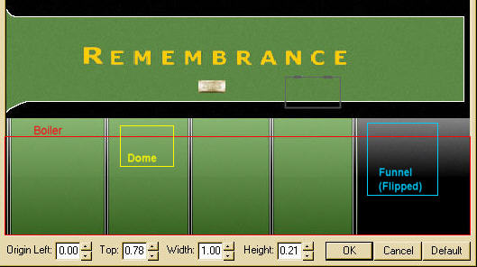

A Steam Loco for MSTS Using 3DCanvas
by Paul "decapod" Gausden
Chapter 7 - The Rest Of The Bodywork
A few more shapes need building to make this object look more like a loco. Firebox, Water tank, Cab and coal bunker.
Firebox
This is effectively a box with rounded edges - so that's the way we'll build it!
- Starting with a cube primitive, scaled to the maximum dimensions of the firebox from the plans (extending it into the cab slightly for the back head.
- Select the two top side edges and run the "Chamfer" object operation - don't click anywhere else once this has run! make sure the two new faces are still selected.
- The top curve on the firebox has a larger radius than the curve on the ends so this first chamfer needs to be enlarged. You do this by holding down the shift key and dragging the mouse over the edit control, until the faces are approximately 2-3 times their original width.
- Now holding down the Ctrl key, we select all of the edges on the object, except for the ones around the base.
- Run the Chamfer operation again - one firebox.
- To position it on the model, Make the new group a child of the main group.
- Select the two lower rear corners and run the Shift Centre plugin - now alter the Group Position properties to the correct position from the plan.
- Once you're happy with the position, drag the firebox object into the boiler group.
Tank
This is a box. You could be more accurate and build it as two boxes on either side, but the visible difference in negligible. Basically the procedure is exactly the same as for the firebox, but without any of the chamfering.
Also, this box has to be butted up against the cab (and not part of the cab as I am trying to keep objects in a group with single texture files). There is a slight curve at the top rear and the bottom rear needs to curve down to follow the footplate.
- Scale a cube from the start of the top curve to the footplate and position it as per the fire box - Don't drag the tank group into the boiler group just yet, we need it shortly to position the cab against it.
- We now need to make and extrude and scale twice, following the pale green on the plan below. To make a "smooth" circular curve, the first extrude is just over twice the second extrude size.
We make the first extrude (about 0.1), then select the face and use the vertical scale of the edit control to increase the height of the face by 0.1 (0.05 top and bottom) - I then had to drag the bottom edge down slightly as it didn't quite meet the footplate.
- The second extrude was 0.05 and the height was increased by 0.2 this time.
Cab
Cabs can be done as extrude objects, alternatively they could be built out of a cube and part of a cylinder on its side, welded together - then the roof would need to be split off and adjusted for overhang.
Not anymore! - Cab builder plugin to the rescue.
- Before running the plugin, gather some dimension information on the cab.
- Select the footplate object and run the "MSTS Cab Builder" plugin - the plugin attempts to position the cab on top of the currently selected object - and gets it wrong in this particular case due to the odd shape):
- Press OK.

- we can position the cab exactly against the tank by dragging the cab *group* into the tank group and adjusting it's Z position to the length of the cab base (2.64) divided by two minus 0.15 (the two extrudes)
- Now drag the cab object down with the right mouse button till it touches the footplate.
- Now move the Cab group back into the main group and drag the tank object into the Boiler group.
NOTE - there is/was a bug in the cab builder plugin where the roof object disappears after saving. Optimising the object and/or adding a texture to the roof should stop this from happening.
Bunker
A similar process to the Cab object.
There are lots of hidden faces now - make sure you remove them all (back of boiler, bottom of firebox etc)
Before I begin adding the textures, you may have noticed on a couple of the textures I have pre-drawn, there was not enough room to cover the entire object as built. Firebox sides - The bottom edge of the Firebox sides need to be shifted up to just above the boiler centre line to match the size of the texture.
- select both flat sides of the firebox and run the Face Split plugin.
- Select the bottom edge of both sides of this new object (using the CTRL key).
- move near one of the edges (so it turns yellow) and use the Right mouse button drag to list both edges up to just above the centre of the boiler. (I have made the Tank object invisible to see what was happening):
- Use the Merge object operation on the right menu to recombine the split faces with the firebox object and press the Optimize object operation button. An alternative way is to use the split option on all 4 vertical edges, then use the Edge operation to split the faces horizontally, then delete the lower face. (My Edge operation doesn't seem to work properly).
Cab Front and Back
I also forgot to mention I didn't delete the rear face of the Tank or the cab side face of the bunker. I'll using these as part of the Cab.
- Select all inside and outside faces of the front and rear cab faces and use the face split plugin as before.
- Select the two bottom edges of this object (can be difficult to spot as the footplate gets in the way)
- Use the right mouse drag again, till the rear edge is near the top of the coal level in the bunker.
- Merge and optimise objects as before.
Painting
Now switch on "highlight selection showing operation direction". When you select an object, it now shows the way a texture will get wrapped on an object. (Orange is the left of the selected texture area, green top, blue bottom, red right, using the "Flat Wrap" option on the texture)
With "Edit using standard coordinate" orientation mode turned on, the texture "snaps" horizontally and is only affected by moving the view around the object.
- Making sure the boiler texture is selected in the material palette - make sure there is no mask selected for this texture. Select the crop texture button.
- Select the area as shown, leaving a gap at the top.

- Use the fill tool on the right on the boiler object.
For the funnel, I select an area of the firebox, light at the top, dark at the bottom, press the flip texture vertically and fill the object. Using Cylindrical wrapping sometimes helps here.
<The dome I select an area from the boiler between the bands, with the texture up the right way.
Now you may notice that there appears to be some "stretching" on top of the boiler - to adjust the texture to reduce this...
- Select the top few faces of the boiler from the centre, down one side (depends on how many faces you have used on the boiler).
- Run the UV remap operation (button with red Grid):
- Now drag the green squares up so they are spaced more evenly.
- Repeat at the firebox end and press OK - less stretching.
Tank
- Select an area of green (from next to the word Remembrance), move to a 3/4 view, switch to edit using screen coordinates and fill the tank object.
- Switch to the default coordinate mode, crop the texture for the left side (I conveniently set the sizes to multiples of 128, so the Y texture coordinates will be multiples of 0.25)
- Multi-select all faces that make up the left side and press the "Apply Material to Selection" operation - the paint pot on the left menu (Object Operations)
- repeat for the right side.
I should mention, after each application of a texture, if it is not quite correct, you can make use of the operation adjust tool on the Right menu. I have had some odd result with this, but on the whole it works quite well.
For instance, the tank side texture needed shrinking slightly from the bottom so the white line was visible. After applying the texture, selecting the operation adjust tool, clicking on the tank and using the Y axis of the edit control, I was able to fix the texture. This tool takes a bit of experimentation.
Firebox
A bit of a combination of all so far.
- Fill the firebox object with a plain green area of texture from the firebox section.
- Select all the side and top faces.
- Crop the firebox texture (leaving a gap at the top, as with the boiler, but not as large) and apply using the "Apply Material" Operation, viewing from the side with default mode on.
- There is a slight problem with reducing the stretching on top here. Being only one face, it leaves one side slightly different to the other, but it's not really noticeable.
The backhead is also part of the firebox, inside the cab.
- Select the back face and all the small faces around it.
- Crop a small grey/black area from the texture and use the apply material.
- Select the back face by itself.
- Select the backhead from the texture and use the apply material operation again.
Cab
Now load the cab texture file into the Material Palette.
- I have Merged the bunker object into the cab object to form a single object for texturing purposes.
- Select *all* faces inside and out that make up the right cab and bunker side.
- Select the right cab side from the texture:
- Use the apply material operation.
This is also a good time to try out the operation adjust tool to shift the texture slightly to line up the lining between the tank and cab - alternatively,adjust the texture is that's easier.
- Repeat for the Left side (Looks like I may have to make a couple of small adjustments to the texture later to make the 3rd coal rail appear properly) The bunker rear was taken from a small section near the back of one of the bunkers. The usual method of selecting all faces (inside and out) and applying the texture was used. There is quite a lot of stretching from the back, but I'll wait to see how this looks running before doing anything about it. The from and rear cab faces were applied in the same way (remembering to select inside and out) - the front face required quite a bit of adjustment to make it fit correctly. You could use UV re-map if the operation adjust is not easy to use. Just watch the left panel as you change the coordinates.
Coal
- Viewing from above and select "edit using screen coordinates":
- Crop an area of coal and apply this to the selection.
Roof
- Select the whole object this time and move to view from above, as square as possible.
- crop the roof texture and fill using the fill tool (as this is an independent object)
Looks a lot more like a steam engine when you export it now ...